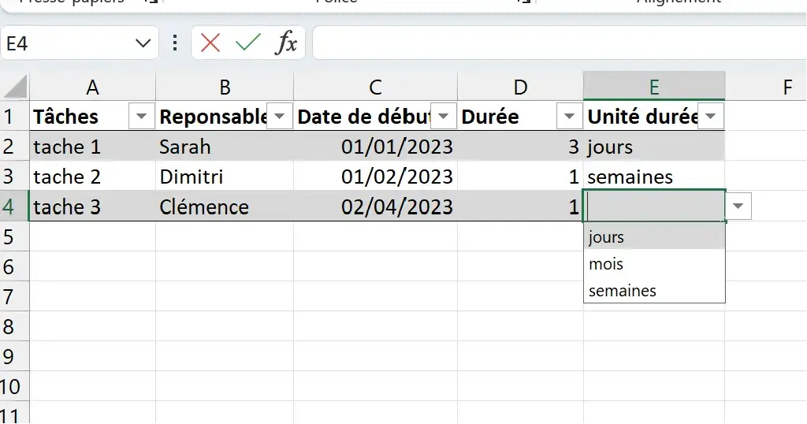
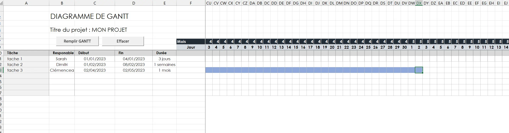
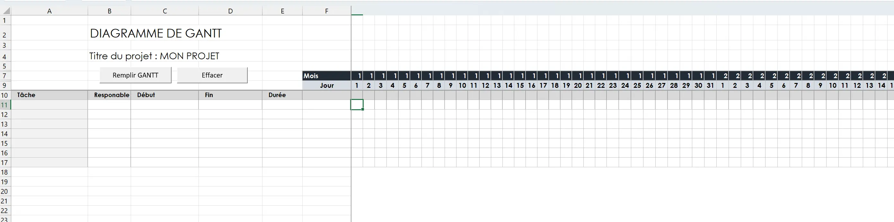
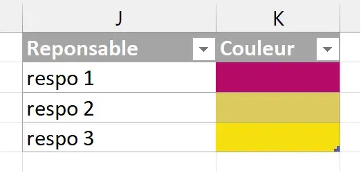
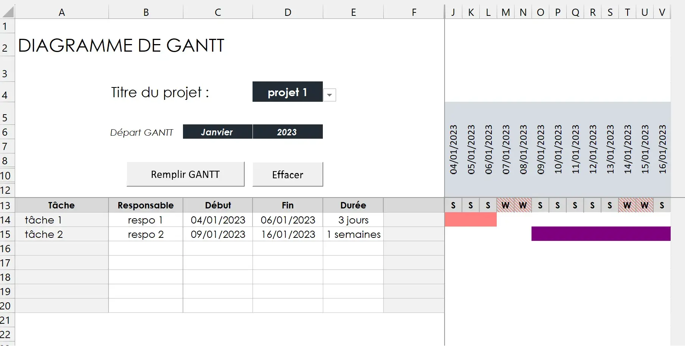

POK 1: Réalisation d'un diagramme de GANTT sous VBA
- POK
- 2023-2024
- temps 1
- Macro VBA
- Excel
- Diagramme de GANTT
- Gestion de projet
- Sarah Sebastien
Ayant quelques bases en VBA, j'ai choisi pour ce POK de les approfondir pour aboutir à l'obtention d'une diagramme de GANTT sur Excel qui sera paramétrable par l'utilisateur.
Niveau intermédiaire
Prérequis : Avoir quelques bases en VBA Pour ceux qui veulent débuter en VBA, je conseille de suivre ce guide
Télécharger le fichier Excel
Objectif de ce POK
L'objectif de ce POK est de créer un GANTT automatisé. Cette tâche est déjà réalisable sans utiliser VBA mais je trouvais intéressant d'en apprendre plus sur ce langage en automatisant le diagramme avec une macro.
Sommaire
Présentation de l'outil
L'utilisateur viendra rentrer dans une feuille de données :
- nom du projet
- nom de la tâche
- type de tâche (tâche ou sous tâche)
- le responsable
- la date de début de la tâche
- la durée de la tache
Il viendra ensuite choisir le projet pour lequel il aimerait visualiser le GANTT et cliquera simplement sur un bouton pour afficher le GANTT du projet sélectionné.
Fonctionnalités souhaitées
L'outil aura 2 onglets (1 pour remplir les données et l'autre pour visualiser le GANTT)
- onglet "données" avec un tableau contenant les informations sur les projets citées plus haut et un bouton "mettre à jour les données"
- onglet "GANTT" :
- tableau GANTT sur lequel sont affichés tous les jours de l'année
- des colonnes "tâche", "responsable", "date de début", "date de fin", "durée"
- les cases du GANTT seront coloriées de couleurs différentes en fonction du responsable
- un affichage lisible de la date
- l'affichage du début du tableau au premier jour de la première tâche et la fin du tableau à la fin de la dernière tâche
- une case "Nom de projet:" avec un menu déroulant grâce auquel l'utilisateur peut choisir le projet dont il veut visualiser le gantt
Point d'avancement au 1er sprint : Première version de la macro
Onglet "Données"
On peut voir qu'il manque la notion de "nom projet" et de type de "tâche". J'ai de plus remarquer qu'il fallait un bouton pour remettre à zéro le tableau de données (comme la macro va jusqu'à la dernière ligne remplie, "effacer le contenu" l'empêche de fonctionner si des lignes du tableau sont vides)
Onglet Gantt
Après appui sur "Remplir GANTT"
Le remplissage du GANTT fonctionne mais manque encore de lisibilité au niveau des dates. La macro ne lit pas les cases fusionnées, il faut donc qu'elles aient toutes du contenu pour pouvoir venir effectuer des tests dessus.
Après appui sur "Effacer"
Les objectifs révisés pour le sprint 2
Voici donc ma liste de fonctionnalités revisitées (en italique les nouvelles fonctionnalités souhaitées)
- onglet "données" :
- [x] un tableau contenant les informations sur les projets citées plus haut
- [ ] ajout au tableau des informations manquantes
- [ ] bouton "mettre à jour les données"
- [ ] bouton "effacer le contenu"
- onglet "GANTT" :
- [x] un tableau GANTT sur lequel sont affichés tous les jours de l'année
- [x] des colonnes "tâche", "responsable", "date de début", "date de fin", "durée"
- [ ] les cases du GANTT seront coloriées de couleurs différentes en fonction du responsable
- [ ] un affichage lisible de la date
- [ ] l'affichage du début du tableau au premier jour de la première tâche et la fin du tableau à la fin de la dernière tâche
- [ ] une case "Nom de projet:" avec un menu déroulant grâce auquel l'utilisateur peut choisir le projet dont il veut visualiser le gantt
Présentation de l'outil final
La gestion des données
Dans cette première partie, l'utilisateur vient renseigner les données du ou des projets qu'il a planifiés.

Vue de la feuille "Données" avec un bouton Valider et un bouton effacer les données
Valider
Lorsqu'il a rempli son tableau, il clique alors sur Valider. La procédure suivante s'exécute:
Sub Valider()
Call recuperer_noms_projets
Call recuperer_nom_respo
End Sub
Elle s'effectue en deux temmps: Elle vient d'abord récupérer les noms des projets et les ajoute dans un tableau à part, dans une autre feuille appelée "BackData", en supprimant les doublons.
Sub recuperer_nom_projets()
Sub recuperer_nom_projets()
'On se place sur la feuille "Données"
Sheets("Données").Select
'Fixe le N° de première ligne de la plage à lire
Dim NoLigDeb As Integer
NoLigDeb = 2
'Fixe le N° de la dernière ligne de la plage à lire
Dim NoLigFin As Integer
NoLigFin = Range("A" & Rows.Count).End(xlUp).row
'On définit une variable pour le nom du projet
Dim nom_projet As String
'On définit un compteur
Dim rowIdx As Integer
For rowIdx = NoLigDeb To NoLigFin
'On affecte à nom_projet la valeur de la première ligne renseignée
nom_projet = Cells(rowIdx, 1).Value
'On se place sur la feuille Back Data, que l'on rend visible
Sheets("BackData").Visible = True
Sheets("BackData").Select
'On crée une variable tableau qu'on affecte au tableau nommé "tableau_nom_projets"
Dim tableau As ListObject
Set tableau = ActiveSheet.ListObjects("Tableau_nom_projets")
'On créé la variable J qui compte le nombre de lignes de ce tableau
J = tableau.ListRows.Count + 1
'Nouveau compteur
Dim i As Integer
i = 2
'On parcourt les lignes du tableau pour voir si le nom du projet n'apparait pas déjà
Do While i <> J + 1
If Cells(i, 1).Value = nom_projet Then
Exit Do
End If
i = i + 1
Loop
'S'il n'est pas apparu et qu'on se trouve à la fin du tableau
If i = J + 1 Then
'On ajoute une ligne...
tableau.ListRows.Add
'...Et on ajoute le nom du projet au tableau
J = tableau.ListRows.Count
tableau.DataBodyRange(J, 1).Value = nom_projet
End If
'On cache "BackData", on se replace sur la feuille "Données et on réitère
Sheets("BackData").Visible = False
Sheets("Données").Select
Next
End Sub
Puis elle vient récupérer le noms des responsables, cités dans les projets, dans un tableau à part en supprimant les doublons. Le principe de la procédure est le même que pour celle qui récupère le nom des projets.
Tableau : Nom_respo
Sub recuperer_nom_respo()
Sub recuperer_nom_respo()
'Fixe le N° de première ligne de la plage à lire
Dim NoLigDeb As Integer
NoLigDeb = 2
'Fixe le N° de la dernière ligne du tableau des tâches
Dim NoLigFin As Integer
NoLigFin = Range("Tableau_taches").Rows.Count + 1
Dim nom_respo As String
Dim rowIdx As Integer
For rowIdx = NoLigDeb To NoLigFin
nom_respo = Cells(rowIdx, 3).Value
Dim tableau As ListObject
Set tableau = ActiveSheet.ListObjects("Nom_respo")
J = tableau.ListRows.Count + 1
Dim i As Integer
i = 2
Do While i <> J + 1
If tableau.DataBodyRange(i - 1, 1).Value = nom_respo Then
Exit Do
End If
i = i + 1
Loop
If i = J + 1 Then
tableau.ListRows.Add
J = tableau.ListRows.Count
tableau.DataBodyRange(J, 1).Value = nom_respo
tableau.DataBodyRange(J, 2).Interior.Color = RGB(Int(256 * Rnd), Int(256 * Rnd), Int(256 * Rnd))
End If
Next
End Sub
Lors de cette procédure, une autre sous-procédure est appelée qui permet de générer une couleur aléatoirement pour chaque responsable, qui sera ensuite utilisée pour colorier les cases du Gantt.
Sub couleur_aléatoire()
Sub couleur_aléatoire()
'Fixe le N° de la première ligne de la plage à lire
Dim NoLigDeb As Integer
NoLigDeb = 2
'Fixe le N° de la dernière ligne de la plage à lire
Dim NoLigFin As Integer
NoLigFin = Range("L" & Rows.Count).End(xlUp).row
Dim i As Integer
For i = NoLigDeb To NoLigFin
Cells(i, 12).Interior.Color = RGB(Int(256 * Rnd), Int(256 * Rnd), Int(256 * Rnd))
Next i
End Sub
Effacer les données
un clique sur le bouton permet d'appeler directement la procédure suivante qui efface les données des 3 tableaux mentionnés plus haut.
Sub effacer_données()
Sub effacer_données()
Sheets("Données").Select
'effacer la liste des taches
Range("A2:F2").Select
Range(Selection, Selection.End(xlDown)).Select
Do While IsEmpty(Cells(2, 1)) = False
Selection.ListObject.ListRows(1).Delete
Loop
'effacer la liste des responsables
Range("Nom_respo").Select
Do While IsEmpty(Cells(2, 10)) = False
Selection.ListObject.ListRows(1).Delete
Loop
'On rend visible le feuille BackData pour pouvoir la sélectionner
Sheets("BackData").Visible = True
Sheets("BackData").Select
'effacer la liste des noms de projets
Range("Tableau_nom_projets[[Nom projet ]]").Select
Do While IsEmpty(Cells(2, 1)) = False
Selection.ListObject.ListRows(1).Delete
Loop
'On revient sur la page des données et on cache BackData
Sheets("BackData").Visible = False
Sheets("Données").Select
End Sub
Affichage du GANTT

Visuel du tableau de Gantt avec les options de choix du projet et de la date d'affichage, les boutons qui permettent l'affichage du Gantt et d'effacer le contenu du tableau
Choix du projet et de la date
L'utilisateur peut venir choisir le projet dont il veut afficher le gantt à l'aide du menu déroulant de la cellule D4, qui contient le nom de tous les projets renseignés plus tôt. Il peut également paramétrer les caractéristiques du Gantt en choisissant la date de début d'affichage.
Pour réaliser ces actions j'ai programmé ici directement sur la feuille ("Worksheet") qui contient le tableau plutôt que sur des modules. Car ici, on va venir effectuer une procédure à chaque fois qu'il y a un changement sur la feuille, c'est à dire, une action de l'utilisateur.
Private Sub Worksheet_Change(ByVal Target As Range)
Private Sub Worksheet_Change(ByVal Target As Range)
Prend en entrée les données de la cellule modifiée par l'utilisateur
'Si la cellule modifiée est celle qui contient le titre du projet ou celle qui gère la date de début d'affichage du gantt...
If Target.Column = 4 And Target.row = 4 Or Target.row = 6 Then
'...Alors on appelle la procédure de remplissage du Gantt
Call Remplissage_gantt
End If
End Sub
Il faut noter que le gantt ne s'affiche que sur 1 an Par ailleurs, pour le changement des dates pour l'affichage du GANTT, cela s'effectue grâce à des formules excel qui viennent générer une liste de date sur une année en fonction des données rentrées par l'utilisateur. La procédure "Remplissage du Gantt" permet de gérer la partie relative aux cases coloriées dans le gantt qui vont changer si on change la date de départ.
Affichage du Gantt
Procédure qui s'execute lorsque l'utilisateur appuie sur le bouton Remplir le Gantt ou vient changer le titre du projet ou la date du départ du tableau.
Sub Remplissage_gantt()
Sub Remplissage_gantt()
'On efface d'abord le contenu du tableau
Call effacer_gantt
'On se place sur la feuille de données
Sheets("Données").Select
'Fixe le N° de première ligne de la plage à lire
Dim NoLigDeb As Integer
NoLigDeb = 2
'Fixe le N° de la dernière ligne de la plage à lire
Dim NoLigFin As Integer
NoLigFin = Range("A" & Rows.Count).End(xlUp).row
'On définit la liste des variables locales que l'on va utiliser
Dim nom_projet As String
Dim etape As String
Dim tache As String
Dim date_debut As Date
Dim date_fin As Date
Dim duree As Integer
Dim unit_duree As String
Dim responsable As String
Dim couleur As Variant
'On initialise les dimensions du Gantt sur la feuille
Dim DepartGanttRow As Integer
DepartGanttRow = 14
Dim DepartGanttColumn As Integer
DepartGanttColumn = 1
Dim FinGanttColumn As Integer
FinGanttColumn = fGantt.Cells(1, 1).End(xlToRight).Column - DepartGanttColumn
Dim DepartGanttColumn_color As Integer
DepartGanttColumn_color = 7
Dim DateRows As Integer
DateRows = 12
'On initialise le compteur de lignes à remplir dans le Gantt
Dim GanttRow As Integer
GanttRow = 0
'On parcourt ensuite les lignes remplies par l'utilisateur
Dim rowIdx As Integer
For rowIdx = NoLigDeb To NoLigFin
'On se place sur la feuille "Données"
Sheets("Données").Select
'On récupère les données d'une ligne rentrée par l'utilisateur
nom_projet = Cells(rowIdx, 1).Value
tache = Cells(rowIdx, 2).Value
responsable = Cells(rowIdx, 3).Value
date_debut = Cells(rowIdx, 4).Value
duree = Cells(rowIdx, 5).Value
unit_duree = Cells(rowIdx, 6).Value
couleur = TrouverCouleur(responsable)
'On trouve alors la date de fin
date_fin = DateFin(date_debut, duree, unit_duree)
Dim nombre_taches As Integer
'On récupère le nom du projet sélectionné par l'utilisateur sur la feuille Gantt
Dim projet_choisi As String
projet_choisi = fGantt.Cells(4, 4).Value
'Avec cette information, on compte le nombre de tâches dans le projet choisi
nombre_taches = 0
For i = NoLigDeb To NoLigFin
If Cells(i, 1).Value = projet_choisi Then
nombre_taches = nombre_taches + 1
End If
Next
'On se place sur la feuille du tableau de Gantt
Sheets("GANTT").Select
If projet_choisi = nom_projet Then
'On appelle la procédure pour remplir la partie texte du diagramme
Call Remplissage_gantt_text(DepartGanttRow, GanttRow, DepartGanttColumn, nom_projet, etape, tache, date_debut, date_fin, duree, unit_duree, responsable)
'On colorie le tableau de GANTT
Call Remplissage_gantt_couleurs(FinGanttColumn, DateRows, DepartGanttColumn_color, DepartGanttRow, GanttRow, date_debut, date_fin, rowIdx, nombre_taches, couleur)
'On passe à la ligne suivante
GanttRow = GanttRow + 1
End If
Next
'on se place sur la première case de la première tache
Cells(13, 7).Select
End Sub
Cette procédure fait appel à deux fonctions pour trouver la date de fin de la tâche et venir récupérer la couleur de la case correspondante au nom du responsable:
Fonction ou Sub?
La principale différence entre Sub et Function est qu'une fonction retourne une valeur.
Private Function DateFin(date_debut As Date, duree As Integer, unit_duree As String) As Date
Private Function DateFin(date_debut As Date, duree As Integer, unit_duree As String) As Date
Fonction qui prend en entrée la date de début d'une tâche, sa durée et l'unité de sa durée et renvoie la date de fin de la tâche
'Si l'unité est en jours
If unit_duree = "jours" Then
If duree = 1 Then
DateFin = DateAdd("d", duree, date_debut)
Else
DateFin = DateAdd(interval_date, duree - 1, date_debut)
End If
'Si l'unité est en semaines
ElseIf unit_duree = "semaines" Then
DateFin = DateAdd("ww", duree, date_debut)
'Si l'unité est en mois
ElseIf unit_duree = "mois" Then
DateFin = DateAdd("m", duree, date_debut)
End If
End Function
Private Function TrouverCouleur(nom_respo As String) As Variant
Private Function TrouverCouleur(nom_respo As String) As Variant
Prend en entrée le nom du responsable et renvoie la couleur qui lui est associée
Dim i As Integer
Range("Nom_respo[[Responsable]]").Select
'On parcourt toutes lignes jusqu'à trouver le nom du responsable
Do While i <> Range("Tableau_taches").Rows.Count + 1
If ActiveSheet.ListObjects("Nom_respo").DataBodyRange(i, 1).Value = nom_respo Then
TrouverCouleur = ActiveSheet.ListObjects("Nom_respo").DataBodyRange(i, 2).Interior.ColorIndex
Exit Do
End If
i = i + 1
Loop
End Function
On fait également appelle à trois procédures :
- une pour effacer le gantt
- une pour remplir le texte du Gantt
- une pour colorier les cases du Gantt
Effacer le contenu du Gantt
Sub effacer_gantt()
Sub effacer_gantt()
'On efface le contenu "texte"
Range("A14").Select
Range(Selection, Selection.End(xlToRight)).Select
Range(Selection, Selection.End(xlDown)).Select
Selection.ClearContents
'On enlève la couleur des cases du GANTT
Range("G14").Select
Range(Selection, Selection.End(xlToRight)).Select
Range(Selection, Selection.End(xlDown)).Select
With Selection.Interior
.PatternColorIndex = xlAutomatic
.ThemeColor = xlThemeColorDark1
.TintAndShade = 0
.PatternTintAndShade = 0
End With
'On affiche toutes les colonnes cachées
Range("G14").Select
Columns("F:XFD").Select
Selection.EntireColumn.Hidden = False
Cells(13, 7).Select
End Sub
Remplissage du texte
Sub Remplissage_gantt_text(DepartGanttRow As Integer, GanttRow As Integer, DepartGanttColumn As Integer, nom_projet As String, etape As String, tache As String, date_debut As Date, date_fin As Date, duree As Integer, unit_duree As String, responsable As String)
Sub Remplissage_gantt_text(DepartGanttRow As Integer, GanttRow As Integer, DepartGanttColumn As Integer, nom_projet As String, etape As String, tache As String, date_debut As Date, date_fin As Date, duree As Integer, unit_duree As String, responsable As String)
Prend en entrée la position du départ du diagramme de Gantt et les informations de la ligne du tableau à remplir. Remplit la partie texte de la ligne du tableau
'On initialise le compteur qui va parcourir les colonnes du diagramme
Dim GanttColumn As Integer
GanttColumn = 0
'Remplissage de la colonne correspondant à la tache
Cells(DepartGanttRow + GanttRow, DepartGanttColumn + GanttColumn).Value = tache
GanttColumn = GanttColumn + 1
'Remplissage de la colonne correspondant au responsable
Cells(DepartGanttRow + GanttRow, DepartGanttColumn + GanttColumn).Value = responsable
GanttColumn = GanttColumn + 1
'Remplissage de la colonne correspondant à la date de début
Cells(DepartGanttRow + GanttRow, DepartGanttColumn + GanttColumn).Value = date_debut
GanttColumn = GanttColumn + 1
'Remplissage de la colonne correspondant à la date de fin
Cells(DepartGanttRow + GanttRow, DepartGanttColumn + GanttColumn).Value = date_fin
GanttColumn = GanttColumn + 1
'Remplissage de la colonne correspondant à la duree
Cells(DepartGanttRow + GanttRow, DepartGanttColumn + GanttColumn).Value = CStr(duree) & " " & unit_duree
End Sub
Coloriage du Gantt
Sub Remplissage_gantt_couleurs (FinGanttColumn As Integer, DateRows As Integer, DepartGanttColumn_color As Integer, DepartGanttRow As Integer, GanttRow As Integer, date_debut As Date, date_fin As Date, rowIdx As Integer, nombre_taches As Integer, couleur As Variant)
Sub Remplissage_gantt_couleurs (FinGanttColumn As Integer, DateRows As Integer, DepartGanttColumn_color As Integer, DepartGanttRow As Integer, GanttRow As Integer, date_debut As Date, date_fin As Date, rowIdx As Integer, nombre_taches As Integer, couleur As Variant)
Prend en entrée la position du départ du diagramme de Gantt et les informations de la ligne du tableau à remplir. Colorie la ligne du tableau
Dim J As Integer
J = 0
'On parcourt l'ensemble du tableau
Do While J < FinGanttColumn
'On cherche la case correspondant à la date de début de la tache
If Cells(DateRows, DepartGanttColumn_color + J).Value = date_debut Then
Exit Do
End If
J = J + 1
Loop
'Une fois cette case trouvée on la colorie en bleu
Cells(DepartGanttRow + GanttRow, DepartGanttColumn_color + J).Interior.ColorIndex = couleur
'et on cache les colonnes de gauche si c'est la première tache du gantt
If Cells(DepartGanttRow + GanttRow, DepartGanttColumn_color + J).row = 14 Then
Call Cacher_colonnes(DepartGanttColumn_color + J, "début")
End If
'On colorie ensuite toutes les cases jusqu'à trouver la case correspondant à la date de fin sur le même principe
J = J + 1
Do While J < FinGanttColumn
If Cells(DateRows, DepartGanttColumn_color + J).Value = date_fin Then
'On colorie la case en bleu et on sort de la boucle
Cells(DepartGanttRow + GanttRow, DepartGanttColumn_color + J).Interior.ColorIndex = couleur
'Et on masque toutes les colonnes à droite si c'est la dernière tâche du gantt
If Cells(DepartGanttRow + GanttRow, DepartGanttColumn_color + J).row = (14 + nombre_taches - 1) Then
Call Cacher_colonnes(DepartGanttColumn_color + J, "fin")
End If
Exit Do
End If
'Sinon on colorie la case sélectionnée en bleu et on passe à la suivante
Cells(DepartGanttRow + GanttRow, DepartGanttColumn_color + J).Interior.ColorIndex = couleur
'case suivante
J = J + 1
Loop
End Sub
Appelle de la sous-procédure pour cacher les colonnes à la fin au début du Gantt
Sub Cacher_colonnes(dColumn As Integer, situation As String)
Sub Cacher_colonnes(dColumn As Integer, situation As String)
En fonction d'un état donné "fin" ou "début", permet de cacher les colonnes à droite ou à gauche de la colonne donnée en entrée
If situation = "début" Then
If dColumn <> 7 Then
Range(Cells(1, 7), Cells(1, dColumn - 1)).Select
Selection.EntireColumn.Hidden = True
End If
End If
If situation = "fin" Then
Range(Cells(1, dColumn + 1), Cells(1, Cells(1, dColumn + 1).End(xlToRight).Column)).Select
Selection.EntireColumn.Hidden = True
End If
End Sub
Analyse des ecarts et conclusion
Voici la liste de fonctionnalités revisitées de la fin du sprint 1 (en barré les fonctionnalités abandonnées et en italique les nouvelles fonctionnalités souhaitées), à laquelle j'ai
- onglet "données" :
- [x] un tableau contenant les informations sur les projets citées plus haut
- [-] ajout au tableau des informations manquantes manque la notion de sous-taches ou tache
- [x] bouton "mettre à jour les données"
- [x] bouton "effacer le contenu"
- onglet "GANTT" :
- [x] un tableau GANTT sur lequel sont affichés tous les jours de l'année
- [-] des colonnes "tâche", "responsable", "date de début", "date de fin", "durée"
- [x] les cases du GANTT seront coloriées en fonction du responsable
- [~] un affichage lisible de la date
- [~] l'affichage du début du tableau au premier jour de la première tâche et la fin du tableau à la fin de la dernière tâche
- [x] une case "Nom de projet:" avec un menu déroulant grâce auquel l'utilisateur peut choisir le projet dont il veut visualiser le gantt
J'ai réussi à programme presque toutes les fonctionnalités que j'avais souhaitées. Cependant, l'affichage manque encore de lisibilité : j'aurais aimé créer une catégorie "Gantt semaine" et "Gantt jours" à choisir en fonction du projet et de la durée des tâches. De plus, un affichage différent en fonction d'une sous tache ou d'une sous tâche aurait été intéressant, mais ce n'était pas un besoin de premier plan. De plus la fonctionnalité d'affichage du début et de fin de gantt en fonction des dates de début et de fin des premières et dernières tâches ne fonctionne pas tout à fait. Si l'utilisateur ne renseigne pas les tâches dans l'ordre la macro ne fonctionne plus
Retour d'expérience
- Maintenant que nous avons suivi le cours sur la méthode agile, je pense que c'est ce qui aurait été le plus pertinent à appliquer pour ce POK, comme méthode projet, avec notamment la notion de User Stories : une hiérarchisation des besoins/fonctionnalités en fonction de leur pertinence et de leur difficulté m'aurait permis de moins m'éparpiller.
- Les procédures que j'ai réalisées sont loooooooin d'être optimisées en terme de lignes de code. Ce n'était pas du tout le but recherché. Mais j'aurais été curieuse de voir comment les rendre plus efficace.
- il aurait été intéressant de réaliser des interfaces utilisateurs sur ce projet. C'est une notion que je n'ai jamais eu l'occasion d'appliquer alors qu'elle aurait été très adaptée à ce sujet